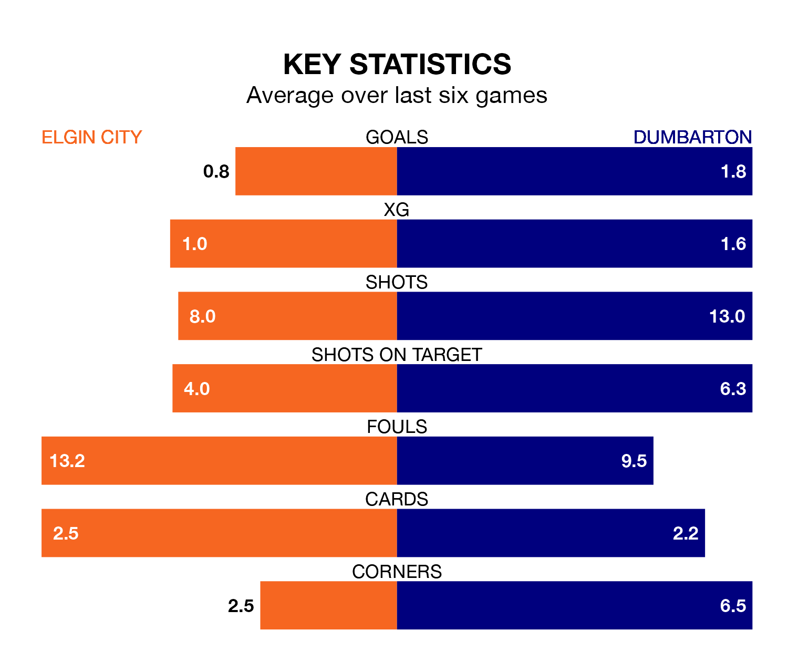

Mid-season relegation candidates Elgin City face a challenge against high-flying Dumbarton at Borough Briggs on Saturday.
Elgin City are ninth in the League Two table, and have picked up five wins and three draws in their 19 games to date.
The Sons, meanwhile, are fourth in the standings with 31 points, having won nine and drawn four, and are 21 points behind table-toppers Stenhousemuir.
With 16 goals in 19 games so far this season, Elgin are the league's lowest scorers with 0.8 goals per game. And they are conceding more than average, letting in 36 goals at a rate of 1.9 per game.
Dumbarton, meanwhile, are above average scorers, with 1.8 goals per game, compared to a league average of 1.4. They have conceded 1.3 goals per game.
In the last 10 years, Elgin and Dumbarton have played each other on six occasions. They won three each.
On average, the Black & Whites scored 1.0 goal and the Sons 1.3 in those matches.
Their last meeting was on November 18, when Dumbarton won 1-0 at home.
With Brett Long between the sticks, the Sons can rely on one of the league's safest pair of hands. He has kept five clean sheets in his 14 appearances this season, and only two other 'keepers – Stenhousemuir's Darren Jamieson and Forfar Athletic's Marc McCallum – have been able to prevent the opposition scoring on more occasions in League Two.
In City's net, Tom McHale has four clean sheets in 18 games. He has conceded a goal every 56 minutes, more than twice as often as the 126 minutes between goals for Long.
The Black & Whites are in disappointing form in League Two, with two wins and four losses from their last six games.
With a win and two draws over that period, the visitors' form is slightly worse – they have taken five points from 18, compared to the home side's six.
Elgin's last match was on January 13, a 2-1 loss against Forfar Athletic, with Ross Draper getting the goal for the Black & Whites.
Dumbarton drew 1-1 with Bonnyrigg Rose Athletic last time out, also on January 13, with Carlo Pignatiello on the scoresheet.
Updated: 09:18 (UTC), 23/01/24